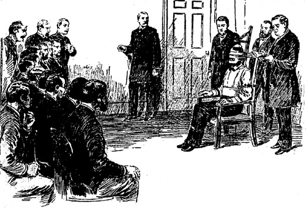

One sole person didn’t invent the electric chair; five people are believed to have contributed to the invention.
Alfred Southwick was a dentist in Buffalo who came up with the idea to kill prisoners with electricity. He served on the commission that established the first electric chair in New York. He became known as ‘old electricity’.
Harold Brown, who worked for Thomas Edison, conducted many of the earlier experiments with the chair and helped build the apparatus for the first execution at Auburn Prison in New York. His assistant Edwin Davis was the first executioner and pulled the switch at the first execution. He pulled the switch more than 300 times after that.
Two more men worked on the development of the chair with the others – Carlos McDonald and A.P. Rockwell. They drew detailed plans and are credited with designing the chair.
A total of 25 states have used the electric
chair but today only three states use it as their sole means of execution:
Alabama, Georgia and Nebraska. The rest have either abolished capital punishment
or have switched to lethal injection and the gas chamber.

BACK
TO 'SLAUGHTER OF THE INNOCENT'
NEXT
Contents.
Table
of U.S States.
How
the chair works and its victims.